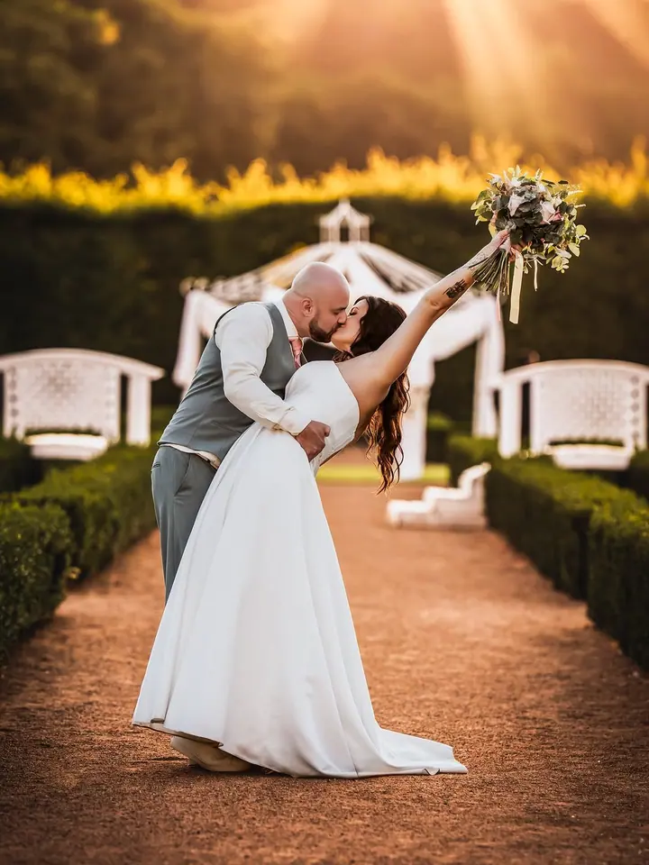
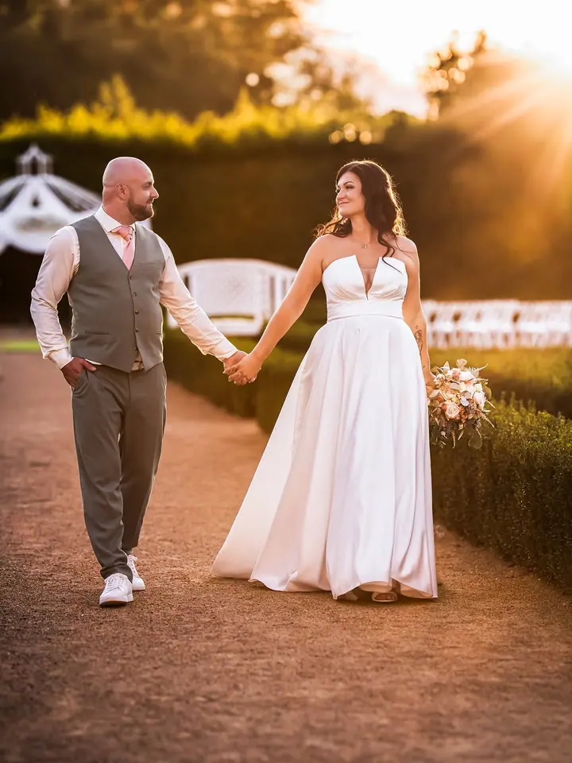
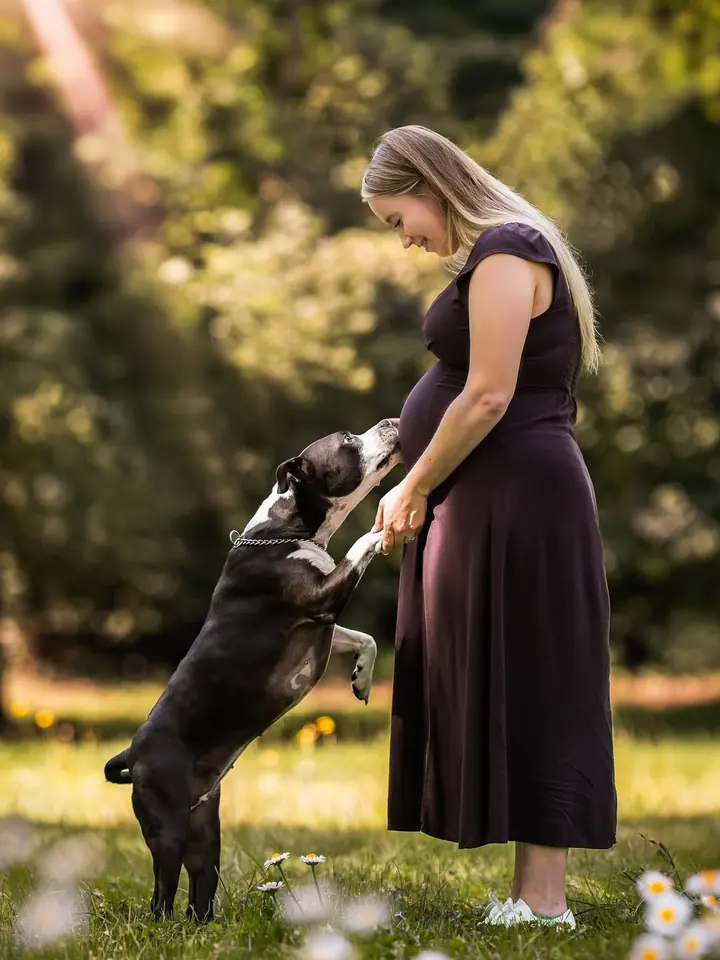
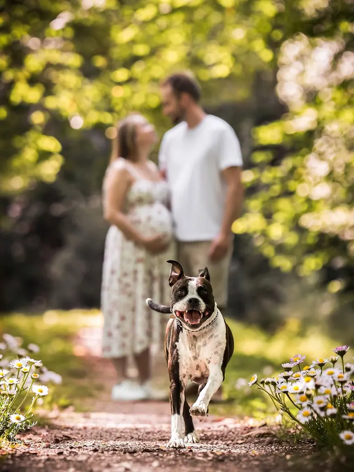

jedna
Svatební focení
Celý váš den od příprav po západ slunce, se smíchem, objetím i slzami dojetí. Po odeslání formuláře vám pošlu aktuální ceník svatebních balíčků.

Svatební a rodinná fotografka · Kopřivnice, Moravskoslezský kraj

Jmenuji se Hana Kysilková a jsem svatební a rodinná fotografka z Kopřivnice. Miluju kreativní tvorbu, jemný detail a opravdové emoce. Fotím vaše svatby, rodiny i čekání na miminko tak, jak je opravdu prožíváte.
Více o mně
Co fotím
jedna
Celý váš den od příprav po západ slunce, se smíchem, objetím i slzami dojetí. Po odeslání formuláře vám pošlu aktuální ceník svatebních balíčků.
dvě
Pohodové focení s partnerem, dětmi i se psem, bez strojených póz. Balíček za 2 200 Kč zahrnuje 10 upravených fotografií, tisk a online galerii.
tři
Čekání na nový život v přírodě a v měkkém světle, klidně i s vaším čtyřnohým členem rodiny. Na focení si můžete přivést, koho máte rádi.
V drobnostech se ukrývá pravý příběh.

Za objektivem
Fotografie je pro mě víc než práce. Je to láska, která mě provází od dětství, kdy jsem poprvé držela fotoaparát v kroužku na základní škole. Dnes je to můj způsob, jak vidět svět kolem sebe.
Věřím, že pravý příběh se ukrývá v drobnostech: ve stisku rukou, tichém pohledu nebo v pohlazení po tváři. Nevěřím na dokonalost, ale na opravdovost, na spontánní smích, objetí i slzy dojetí. Proto se na focení hlavně snažím, abyste se cítili dobře, i když se zrovna rádi nefotíte.
Fotím na Sony A7 IV a A7 V s pevnými objektivy, ale to nejdůležitější je pro mě vždycky cit, intuice a spojení s lidmi, kteří mi dovolí nahlédnout do svého světa. Jestli chcete, ráda vám vaše chvíle uchovám takové, jaké doopravdy jsou.
Hana
Vyplňte krátký formulář nebo mi napište e-mail a pár slov o sobě. U svateb vám pošlu aktuální ceník balíčků, u rodinného focení kompletní obsah balíčku.
Společně vymyslíme místo, čas a atmosféru focení. Ráda zodpovím všechny vaše otázky a pomůžu vám vše naplánovat.
Fotíme v klidu a v pohodě, bez strojených póz. Partneři, kteří se neradi fotí, děti i psi jsou vítaní.
Z náhledů si vyberete fotky k úpravě a já je pro vás pečlivě upravím. Hotové snímky najdete v online galerii.
Portfolio
Otázky
Rodinné focení stojí 2 200 Kč. Balíček zahrnuje 10 upravených fotografií, tisk, online galerii a další. Podrobnosti vám pošlu po odeslání formuláře.
Svatby fotím v několika balíčcích. Stačí vyplnit formulář a já vám pošlu aktuální ceník svatebních balíčků.
Vůbec ne. Na focení je hlavně pohoda a přirozená atmosféra, takže se většinou uvolní i ti, kdo se fotoaparátu jinak vyhýbají.
Určitě. Pejsci k rodině patří a na těhotenských i rodinných fotkách bývají často těmi nejveselejšími momenty.
Napište pár vět o tom, co si představujete. foto@hanakysilkova.cz